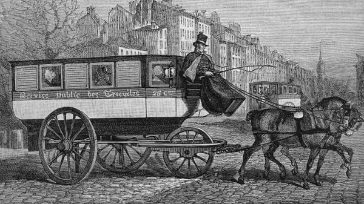

A History of Buses

Timeline
- 1662 – Blaise Pascal introduced the first horse-drawn bus in Paris. However, due to high ticket prices, it only operated for 15 years.
- 1812 – After a huge gap, the horse-drawn bus made its appearance once again. These were a cross between a carriage and stagecoach. People even rode on the roofs of these early buses. It was also at this time that the bus got its name. It derived its name from Latin (Omnibus) meaning “for all.”
- 1830’s – steam-engine powered buses began to operate. In this same time period, the electric trolley bus was invented. These traveling by the use of overhead cables.
- 1895 – the first internal combustion engine bus was invented.
Today – buses have developed into a safe, affordable, and convenient way to travel.